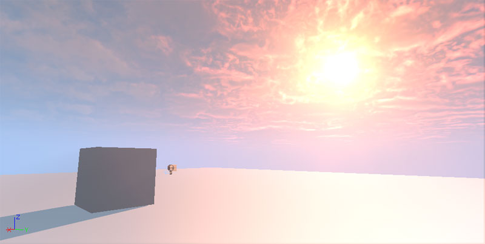
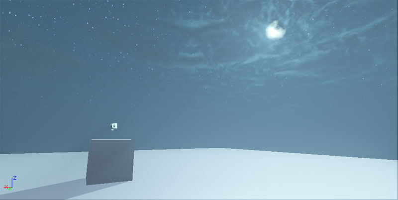

UDN
Search public documentation:
CreatingANewMapCH
English Translation
日本語訳
한국어
Interested in the Unreal Engine?
Visit the Unreal Technology site.
Looking for jobs and company info?
Check out the Epic games site.
Questions about support via UDN?
Contact the UDN Staff
日本語訳
한국어
Interested in the Unreal Engine?
Visit the Unreal Technology site.
Looking for jobs and company info?
Check out the Epic games site.
Questions about support via UDN?
Contact the UDN Staff
创建新地图
概述
地图模板


启动模板
[UnrealEd.SimpleMap] 项下面对它进行编辑。使用与其他模板一样的方法将 SimpleMap 加载进入到一个未命名的关卡，这样用户就不会意外地覆盖初始值。
新地图画面
 新地图画面会显示当前可用模板以及从一个空白的地图开始的选项。只需点击您所选择的模板，就可以开始创建您的新地图了。在开始创建新地图的时候，会提示您保存任何未保存的工作进度。无论您是否是从一个空白的地图或模板开始的，您的地图一开始都是未命名的，所以不会出现意外保存覆盖模板地图的情况。
目前，UDK 包括简单的光照模板，这样您可以在不需要设置复杂光照参数的情况下创建一个带光照的地图。
新地图画面会显示当前可用模板以及从一个空白的地图开始的选项。只需点击您所选择的模板，就可以开始创建您的新地图了。在开始创建新地图的时候，会提示您保存任何未保存的工作进度。无论您是否是从一个空白的地图或模板开始的，您的地图一开始都是未命名的，所以不会出现意外保存覆盖模板地图的情况。
目前，UDK 包括简单的光照模板，这样您可以在不需要设置复杂光照参数的情况下创建一个带光照的地图。
添加模板地图
- 将您的模板地图保存到 UDKGame 模板地图文件夹 UDKGame\Content\Maps\Templates 中。使用 umap 文件扩展名保存它，例如，MyTemplateMap.umap。
- 运行虚幻编辑器并在内容浏览器中选择始终加载的软件包 UDKMapTemplateIndex。这个软件包中包含与每个用户添加的模板地图对应的 TemplateMapMetadata。
- 要将您的模板添加到索引中，可以通过在内容浏览器中点击 New（新建）或右击资源面板背景并选择‘New TemplateMapMetadata（新建模板地图元数据）’创建 TemplateMapMetadata 对象。

命名您的元数据对象使其与您的模板地图文件相符。所以，如果您的模板地图名称为 MyTemplateMap.umap，那么将您的元数据对象命名为 MyTemplateMap，然后点击 OK。 - 要添加一个说明性的缩略图，那么准备一个合适的图片文件，然后通过右击资源面板背景并选择‘Import（导入）...’将这个图片导入到当前软件包 Texture 中。为它取一个合适的名称。保持默认导入设置应该就可以。
- 要使用这个缩略图，那么通过双击或通过右击并选择 Properties（属性）...编辑您的 TemplateMapMetadata。将这个贴图设置为 Thumbnail（缩略图）属性。

- 将更改保存为 UDKMapTemplateIndex
- 本地化在 New Map Screen（新地图画面）上的模板显示名称，也就是说您的模板的默认内部文本需要在 UDKGame\Localization\INT\EditorMapTemplates.int 中进行定义。请参阅本地化参考指南。您将会需要下面这些内容：
[TemplateMapMetadata.DisplayNames] MyTemplateMap=My Template
- 关闭虚幻编辑器并重新启动它。您的模板应该显示在 New Map Screen（新的地图画面）上。